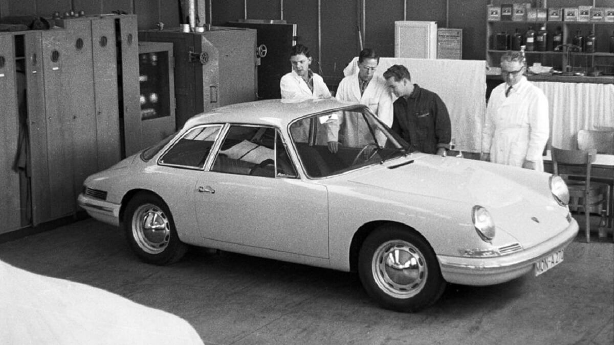
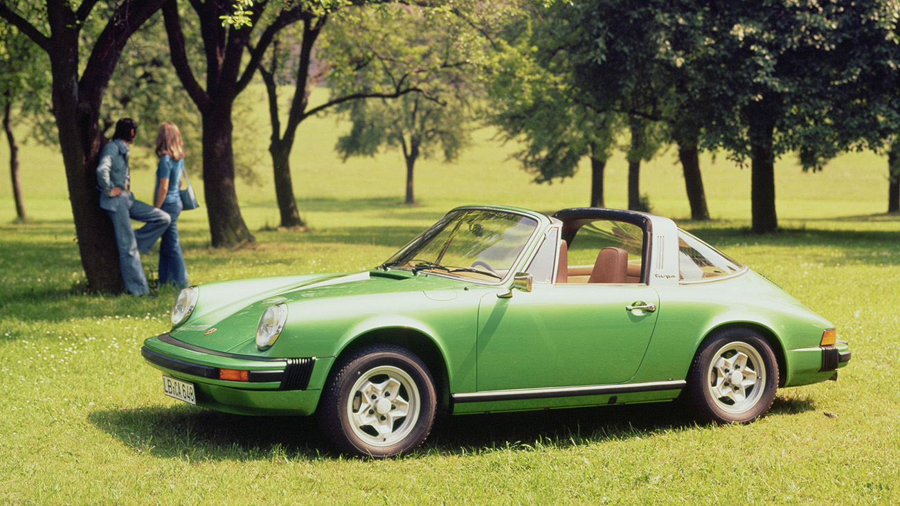
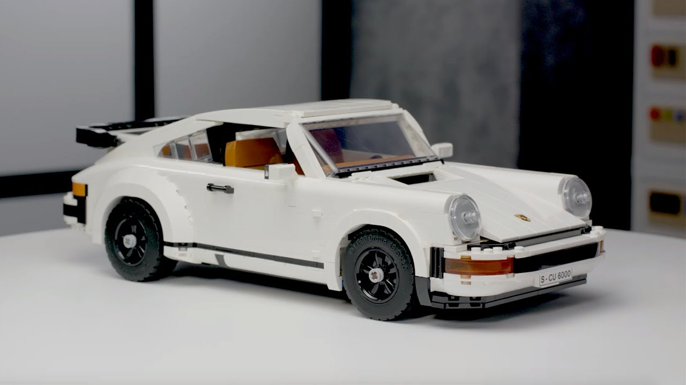

The Porsche 911
When the Porsche 911 was first introduced at the 1963 Frankfurt Motor Show, it was quickly recognised as a triumph of both design and engineering. Six decades and eight generations later, the concept still endures and the 911 remains one of the most iconic sports cars of all time.
The Turbo

The Porsche 911 Turbo, first introduced in 1975, revolutionized the world of sports cars. Built upon the foundations laid by the original 1963 911, it was Porsche's bold step into high-performance territory. Known internally as the 930, the Turbo was the fastest and most powerful 911 of its time, combining raw power with everyday usability — a formula that has endured to this day.
Design and Identity
The 911 Turbo featured wider rear fenders, larger wheels, and an iconic "whale tail" rear spoiler that became synonymous with performance. Its muscular look was not just cosmetic — it served aerodynamic and cooling functions essential for the turbocharged engine. With its instantly recognizable silhouette, the 911 Turbo became a symbol of 70s excess and engineering prowess.
Turbocharged Power
The original 3.0-liter flat-six engine with a single turbocharger produced 260 horsepower, later increased to 300 hp in the 3.3-liter version from 1978. Acceleration was brutal and thrilling, with a reputation for sudden bursts of speed known as "turbo lag." Despite its wild nature, the Turbo cemented Porsche's reputation for combining luxury, precision, and pure driving excitement.
Legacy and Influence
The 911 Turbo laid the foundation for decades of high-performance 911 variants. It defined what a turbocharged sports car should be: fast, beautiful, and slightly intimidating. Today, it is one of the most sought-after classic Porsches, admired for both its mechanical complexity and iconic design.
The Targa

Introduced in 1965 as an alternative to full convertibles, the Porsche 911 Targa was a response to looming safety regulations in the U.S. Its distinctive design featured a removable roof panel and a fixed stainless-steel roll bar, creating an open-top experience without compromising structural integrity. The Targa was a creative solution that became an instant design classic.
Timeless Design Elements
The 911 Targa kept the graceful curves of the coupe while offering a new kind of versatility. Its wraparound rear window, added in later versions, enhanced visibility and added a sleek, futuristic touch. With the roof removed, drivers enjoyed the exhilaration of open-air motoring, while the Targa bar gave the car a unique identity that stood out among sports cars.
Driving Experience
Thanks to the same rear-engine layout and precision engineering as the coupe, the 911 Targa offered dynamic handling and a sporty feel. It was equally at home on winding mountain roads or coastal drives, delivering a sense of freedom with every kilometer. The Targa appealed to those who wanted a Porsche with both performance and a touch of elegance.
A Lasting Legacy
The Targa concept has endured through every generation of the 911. While modern Targas now feature automated roof systems and advanced technology, the original models from the late 1960s and 70s remain highly prized by collectors and purists. The Targa stands as a testament to Porsche's ability to blend innovation with timeless style.
From the Design Team

This model started out as a passion project of mine. Naturally, I'm very excited that we decided to make it into an actual LEGO® set. I began by reading all about the different Porsche 911 versions and gathered lots of images of the car to work from. The major challenge was designing the model so it could be built as either a Turbo or a Targa. We built five different versions of the car before we were happy with the result. I'm especially proud of how well we managed to capture the "face" of this car; the front bumper and the angled headlights, etc. It's classic 911!